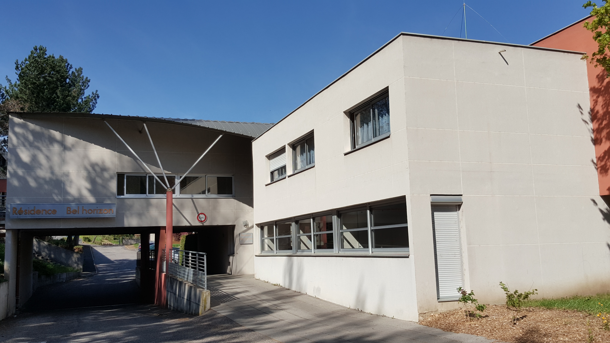
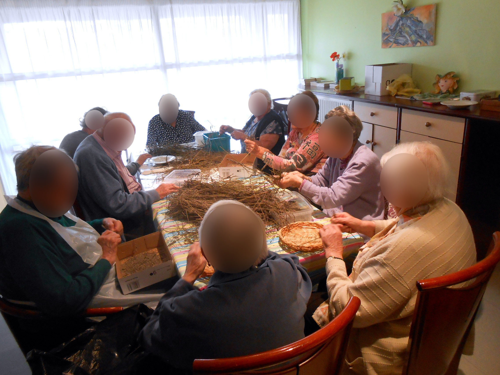
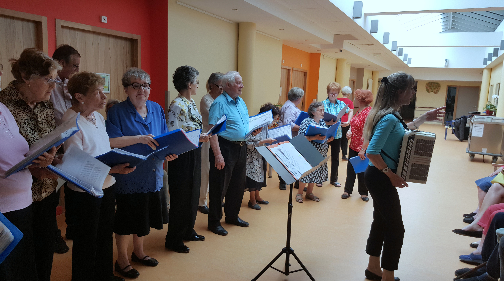
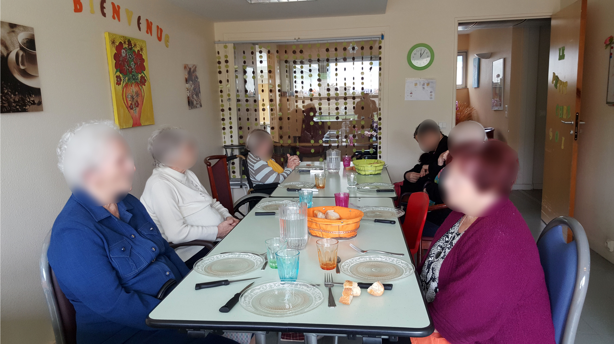

Bienvenue à la résidence Bel Horizon
du Puy-En-Velay.

Un emplacement de choix
La résidence "Bel Horizon" se situe sur les hauteurs de Guitard, et dispose d'une vue panoramique imprenable sur les principaux monuments touristiques de la ville. Cette structure, proche du centre-ville, est desservie par les transports en commun.
Une structure à taille humaine
 L'EHPAD (Établissement d'Hébergement pour Personnes Agées Dépendantes) est composé de 80 chambres réparties sur deux étages. A chaque étage, vous trouverez une spacieuse salle à manger. Une salle d'animation, un coin lecture, un salon télévision et espace cinéma, ainsi qu'un espace kiné sont à votre dispostion.
 L'Unité Alzheimer (Cantou) est composé de 14 chambres individuelles. C'est un espace sécurisant qui est organisé autour d'une salle de vie centrale. Les activité de la vie quotidienne y sont partagées.
 Le PASA (Pôle d'activités et de soins adaptés) : Sur proposition de l'équipe soignante, une prise en charge Pasa est proposé aux résidants de l'établissement qui présentent des débuts de troubles de la maladie d'Alzheimer ou troubles apparentés. Le Pasa suit un programme d'activités sociales et/ou thérapeutiques au sein d'un espace de vie spécialement aménagé à cet effet au second étage de l'établissement.
Des services hôteliers de qualité
L'entretien des locaux : L'établissement assure quotidiennement l'entretien de chambres et des espaces collectifs dans le respect d'hyigiène et de sécurité en vigueur.
Le linge: Le linge de maison (serviette de table, de toilette et draps,...) est fourni et entretenu par l'établissement. Le linge personnel identifié par une étiquette cousur est entretenue par l'établissement, à l'exclusion du linge délicat. Si vous le souhaitez, vous pouvez confier cet entretien à un membre de votre famille.
Les repas: Tous les repas sont confectionnés par l'établissement par notre équipe de cuisiniers dans le respect de la sécurité alimentaire, et sont servies par l'équipe hôtelière en salle à manger. Cette équipe propose des plats variés et familiaux. Vous avez la possibilité d'inviter à déjeuner votre famille ou des amis.